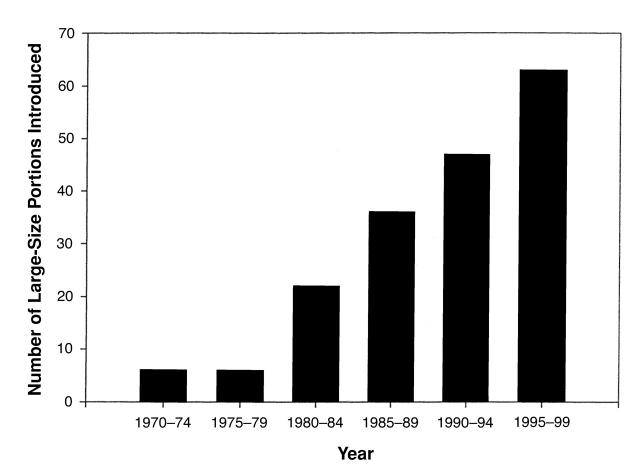
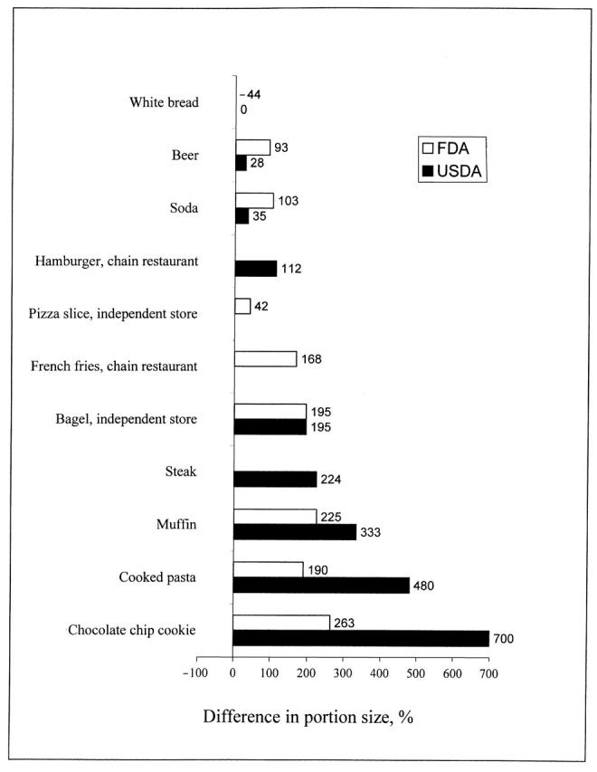

Super Size Me
How did portion sizes get so big? What impact has these huge portion sizes made?
After World War II, new technologies came along that changed how agriculture in the United States now works. Pesticides, herbicides, and other similar chemicals made it easier for farmers to grow more food at a cheaper price. Then, starting in the 1970s, the government started to subsidize the agriculture market. Simultaneously, many fast food brands were interested in continuing their expansion, and with their expansion, they wanted bigger and better profits. With food having become much cheaper, these companies began to increase their portion sizes to include significantly more food. This allowed them to charge more, increasing their profit margins and their profits (Weise, Elizabeth). This trend wasn’t even just for fast food, however, it was for all food, as one study found that “overall, our observations indicate that the portion sizes of virtually all foods and beverages prepared for immediate consumption have increased and now appear typical.” (Young, Lisa R, and Marion Nestle). Alongside food, soft drinks were extremely important, as they were extremely profitable items for fast food companies. Importantly, their consumption increased nearly four times in the second half of the 20th century (Penfold, Steve).
“Introduction of new, larger portions, 1970-1999.” (Young, Lisa R, and Marion Nestle).
“Percentage difference between actual portion sizes of ready-to-eat prepared foods and standard US Department of Agriculture (USDA) and US Food and Drug Administration (FDA) portion sizes.” (Young, Lisa R, and Marion Nestle).
In the same years that fast food portion sizes increased, obesity rates skyrocketed. According to one study, “the rate of growth for those in the super morbid obese category increased from roughly 1 in 2,000 to 1 in 400 (500% growth) between 1986 and 2000, while the rate of obesity increased from 1 in 10 to 1 in 5 (200% growth) during the same period.” (Garcia, Ginny, et al). This massive increase in obesity doesn’t simply impact adults, though, as one review of multiple studies found that a significant amount of the studies it reviewed indicated that these large portion sizes promoted eating behaviors that oftentimes led to obesity, and that these impacts could influence children at the age of 2 (Fisher, Jennifer O., and Tanja V.E. Kral). Clearly, fast food and its increase in portion sizes is directly proportional to the increased rates of obesity.